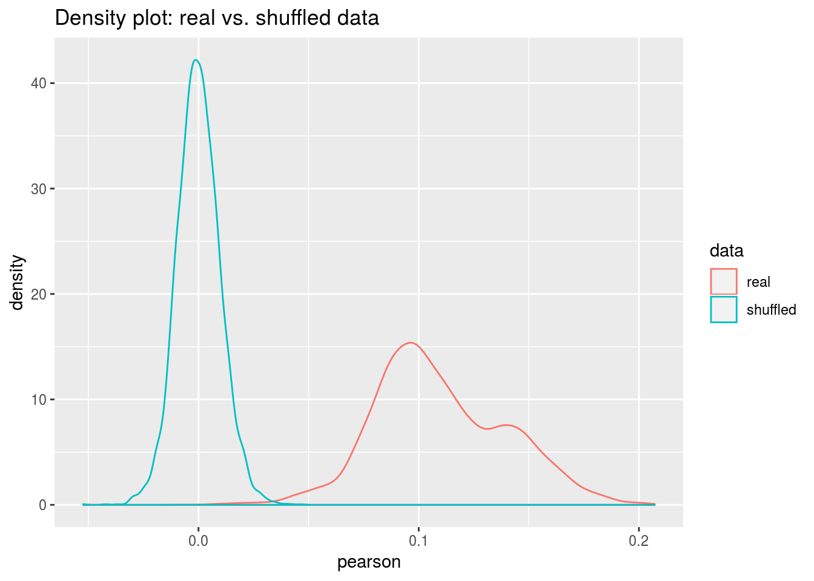
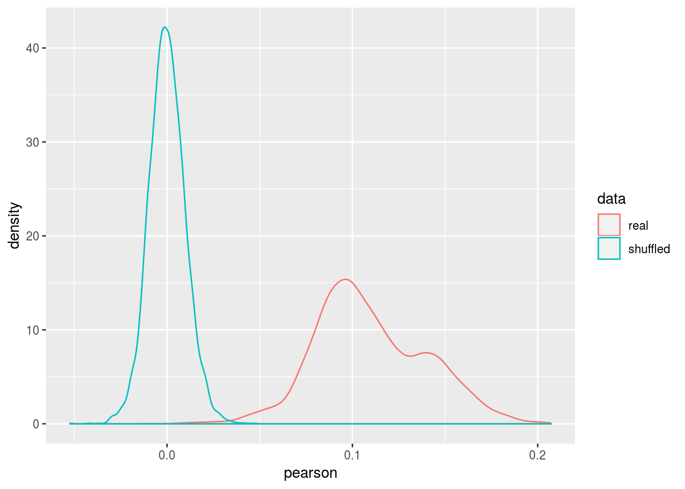
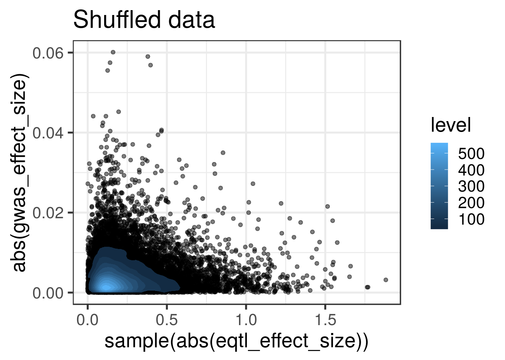

Last updated: 2019-06-11
Checks: 4 2
Knit directory: gtex-gwas-analysis/
This reproducible R Markdown analysis was created with workflowr (version 1.2.0). The Report tab describes the reproducibility checks that were applied when the results were created. The Past versions tab lists the development history.
The R Markdown is untracked by Git. To know which version of the R Markdown file created these results, you’ll want to first commit it to the Git repo. If you’re still working on the analysis, you can ignore this warning. When you’re finished, you can run wflow_publish to commit the R Markdown file and build the HTML.
Great job! The global environment was empty. Objects defined in the global environment can affect the analysis in your R Markdown file in unknown ways. For reproduciblity it’s best to always run the code in an empty environment.
The command set.seed(20190312) was run prior to running the code in the R Markdown file. Setting a seed ensures that any results that rely on randomness, e.g. subsampling or permutations, are reproducible.
Great job! Recording the operating system, R version, and package versions is critical for reproducibility.
To ensure reproducibility of the results, delete the cache directory GWAS_eQTL_correlation_cache and re-run the analysis. To have workflowr automatically delete the cache directory prior to building the file, set delete_cache = TRUE when running wflow_build() or wflow_publish().
Great! You are using Git for version control. Tracking code development and connecting the code version to the results is critical for reproducibility. The version displayed above was the version of the Git repository at the time these results were generated.
Note that you need to be careful to ensure that all relevant files for the analysis have been committed to Git prior to generating the results (you can use wflow_publish or wflow_git_commit). workflowr only checks the R Markdown file, but you know if there are other scripts or data files that it depends on. Below is the status of the Git repository when the results were generated:
Ignored files:
Ignored: .Rproj.user/
Ignored: .httr-oauth
Ignored: analysis/GWAS_eQTL_correlation_cache/
Ignored: analysis/estimate_regulability_cache/
Ignored: code/.httr-oauth
Untracked files:
Untracked: analysis/GWAS_eQTL_correlation.Rmd
Untracked: analysis/bayexcan.Rmd
Untracked: analysis/estimate_regulability.R
Untracked: code/extract_estimates_from_stan_fit.R
Untracked: code/lmm.R
Untracked: data/dapg_variants/
Untracked: data/phenotypes.txt
Untracked: data/tissue_list.txt
Untracked: docs/figure/GWAS_eQTL_correlation.Rmd/
Untracked: docs/figure/bayexcan.Rmd/
Untracked: docs/figure/estimate_regulability.Rmd/
Untracked: output/beta_variance.tsv
Untracked: output/counts_per_ld_block.csv
Untracked: output/counts_per_ldblock_gwas_mx_and_enloc.tsv
Untracked: output/estimated_regulability.tsv
Untracked: output/estimated_sigma_y.tsv
Untracked: output/gamma_variance_by_tissue_phenotype.tsv
Untracked: output/gwas_counts_per_ldblock.tsv
Untracked: output/lmm/
Untracked: output/sqtl_beta_variance.tsv
Untracked: output/t_test_primary_vs_secondary.tsv
Untracked: output/var_gamma_all_variants.txt
Unstaged changes:
Modified: analysis/miscellaneous_statistics.Rmd
Deleted: output/counts_per_ldblock_gwas_mx_and_enloc.rds
Deleted: output/t_test_primary_vs_secondary.rds
Note that any generated files, e.g. HTML, png, CSS, etc., are not included in this status report because it is ok for generated content to have uncommitted changes.
There are no past versions. Publish this analysis with wflow_publish() to start tracking its development.
library(tidyverse)── Attaching packages ────────────────────────────────── tidyverse 1.2.1 ──✔ ggplot2 3.1.0 ✔ purrr 0.3.1
✔ tibble 2.0.1 ✔ dplyr 0.8.0.1
✔ tidyr 0.8.3 ✔ stringr 1.4.0
✔ readr 1.3.1 ✔ forcats 0.4.0 ── Conflicts ───────────────────────────────────── tidyverse_conflicts() ──
✖ dplyr::filter() masks stats::filter()
✖ dplyr::lag() masks stats::lag()library(yaml)dapg_file_pattern <- "data/dapg_variants/with_mashr_results/DAPG_with_mashr__{tissue}.rds"tissues <- readLines("data/tissue_list.txt")
phenotypes <- readLines("data/phenotypes.txt")
rows <- vector(mode="list", length=0)
for (tissue in tissues[49]) {
dfs <- readRDS(glue::glue(dapg_file_pattern))
for (phenotype in phenotypes) {
df <- dfs[[phenotype]]
corr <- cor(abs(df$eqtl_effect_size), abs(df$gwas_effect_size), use = "complete.obs")
corr_shuffled <- cor(abs(df$eqtl_effect_size), sample(abs(df$gwas_effect_size)), use = "complete.obs")
rows <- c(rows,
list(data.frame(
"tissue"=c(tissue,tissue),
"phenotype"=c(phenotype,phenotype),
pearson=c(corr, corr_shuffled),
data=c("real", "shuffled"))
)
)
}
}
suppressWarnings({
corr_df <- bind_rows(rows)
})
# knitr::kable(corr_df)
Warning: The above code chunk cached its results, but it won’t be re-run if previous chunks it depends on are updated. If you need to use caching, it is highly recommended to also set knitr::opts_chunk$set(autodep = TRUE) at the top of the file (in a chunk that is not cached). Alternatively, you can customize the option dependson for each individual chunk that is cached. Using either autodep or dependson will remove this warning. See the knitr cache options for more details.
pp <- ggplot(corr_df, aes(x=phenotype, y=pearson, color=data)) + geom_point() + theme_bw(base_size = 15)
pp <- pp + ggtitle("Whole Blood")
pp <- pp + theme(axis.text.x=element_text(angle=65, hjust=1))
pp
pp <- ggplot(corr_df, aes(x=pearson, color=data)) + geom_density()
pp
tissue <- "Whole_Blood"
phenotype <- "UKB_50_Standing_height"
dd <- readRDS(glue::glue(dapg_file_pattern))[[phenotype]]
Warning: The above code chunk cached its results, but it won’t be re-run if previous chunks it depends on are updated. If you need to use caching, it is highly recommended to also set knitr::opts_chunk$set(autodep = TRUE) at the top of the file (in a chunk that is not cached). Alternatively, you can customize the option dependson for each individual chunk that is cached. Using either autodep or dependson will remove this warning. See the knitr cache options for more details.
scatter_p <- ggplot(dd, aes(x=abs(eqtl_effect_size), y=abs(gwas_effect_size))) + geom_point(alpha=0.5) + theme_bw(base_size = 20)
scatter_pWarning: Removed 6638 rows containing missing values (geom_point).
sessionInfo()R version 3.4.4 (2018-03-15)
Platform: x86_64-pc-linux-gnu (64-bit)
Running under: Ubuntu 16.04.6 LTS
Matrix products: default
BLAS: /usr/lib/libblas/libblas.so.3.6.0
LAPACK: /usr/lib/lapack/liblapack.so.3.6.0
locale:
[1] LC_CTYPE=en_US.UTF-8 LC_NUMERIC=C
[3] LC_TIME=en_US.UTF-8 LC_COLLATE=en_US.UTF-8
[5] LC_MONETARY=en_US.UTF-8 LC_MESSAGES=en_US.UTF-8
[7] LC_PAPER=en_US.UTF-8 LC_NAME=C
[9] LC_ADDRESS=C LC_TELEPHONE=C
[11] LC_MEASUREMENT=en_US.UTF-8 LC_IDENTIFICATION=C
attached base packages:
[1] stats graphics grDevices utils datasets methods base
other attached packages:
[1] yaml_2.2.0 forcats_0.4.0 stringr_1.4.0 dplyr_0.8.0.1
[5] purrr_0.3.1 readr_1.3.1 tidyr_0.8.3 tibble_2.0.1
[9] ggplot2_3.1.0 tidyverse_1.2.1
loaded via a namespace (and not attached):
[1] Rcpp_1.0.0 cellranger_1.1.0 plyr_1.8.4 pillar_1.3.1
[5] compiler_3.4.4 git2r_0.24.0 workflowr_1.2.0 tools_3.4.4
[9] digest_0.6.18 lubridate_1.7.4 jsonlite_1.6 evaluate_0.13
[13] nlme_3.1-137 gtable_0.2.0 lattice_0.20-38 pkgconfig_2.0.2
[17] rlang_0.3.1 cli_1.0.1 rstudioapi_0.9.0 haven_2.1.0
[21] xfun_0.5 withr_2.1.2 xml2_1.2.0 httr_1.4.0
[25] knitr_1.21 hms_0.4.2 generics_0.0.2 fs_1.2.6
[29] rprojroot_1.3-2 grid_3.4.4 tidyselect_0.2.5 glue_1.3.0
[33] R6_2.4.0 readxl_1.3.0 rmarkdown_1.11 modelr_0.1.4
[37] magrittr_1.5 backports_1.1.3 scales_1.0.0 htmltools_0.3.6
[41] rvest_0.3.2 assertthat_0.2.0 colorspace_1.4-0 labeling_0.3
[45] stringi_1.3.1 lazyeval_0.2.1 munsell_0.5.0 broom_0.5.1
[49] crayon_1.3.4